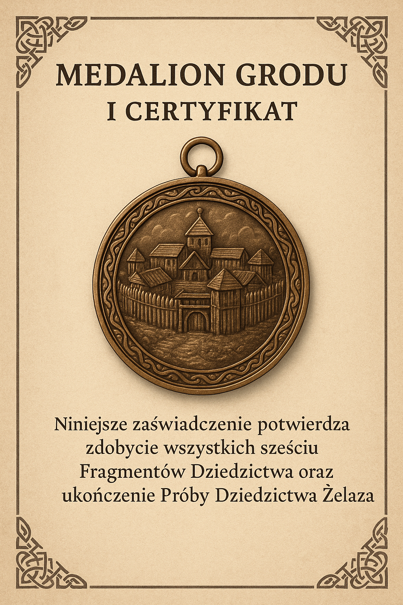

üõ°Ô∏è Gra terenowa RPG: Dziedzictwo ≈ªelaza
üîç Proces rejestracji i rozgrywki
- 1. Rejestracja drużyny: Wpisz nazwę (3–6 osób, do 50 drużyn). Unikaj danych osobowych.
- 2. Wstęp fabularny: Poznaj rok 972 – wyzwania Grodu, historia i kontekst.
- 3. Wybór postaci: Zwiadowca, Tkaczka, Zielarka, Kupiec, Rzemieślnik, Starszy.
- 4. Zadania poboczne: Każdy losuje: ukryty symbol, fragment mapy, runiczne wiadomości, test spostrzegawczości, równowaga w grupie.
- 5. Punkty gry: Odwiedź min. 4 z 6 modułów – Obrona, Kowal, Zagroda, Tkaczka, Zielarka, Kamień Decyzji.
- 6. Panel postępów: Sprawdzaj ukończone zadania i misję poboczną.
- 7. Rada Grodu: Po zdobyciu min. 4 fragmentów – decyzja końcowa (handel, granice, prawo) wpisana do Księgi.
- 8. Zakończenie: Podsumowanie punktów, tytuły (Uczestnik, Strażnik, medalion) i wpisy do Księgi Starszyzny.
Wybierz postać:
Drużyna:
üéØ Misja poboczna:
üìú Zako≈Ñczenie gry
Gratulacje! Twój wynik: /6 punktów.
Na znak ukończenia Próby Dziedzictwa Żelaza otrzymujesz:
Dziękujemy za udział i wkład w przyszłość Grodu!